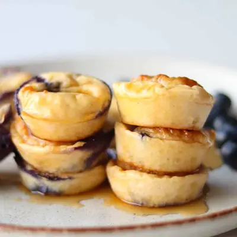

Blueberry Cottage Cheese Bites

Ingredients
- 1 cup (225g) full fat cottage cheese
- 1/2 cup (50g) rolled oats
- 2 large eggs
- 1 teaspoon baking powder
- 1 tablespoon maple syrup or honey (optional)
- 1 teaspoon vanilla extract
- 1/2 cup fresh blueberries
Steps
- Preheat the oven to 350°F. Lightly grease a 24-cup mini muffin pan or use a silicone mini muffin pan.
- Add the cottage cheese, oats, eggs, baking powder, maple syrup, and vanilla to a blender. Blend until completely smooth. Gently stir in the blueberries.
- Divide the batter evenly among the mini muffin cups. Bake for 18–22 minutes, or until the centers are set and the edges are lightly golden.
- This part is important: Let the bites cool in the pan for at least 10 minutes before removing them. They’re very soft straight from the oven and will firm up as they cool.
Recipe by Min Kwon · Kidfriendly Meals, from MJ and Hungryman. Saved here for personal use; the original has the full notes, tips and photos. Open original